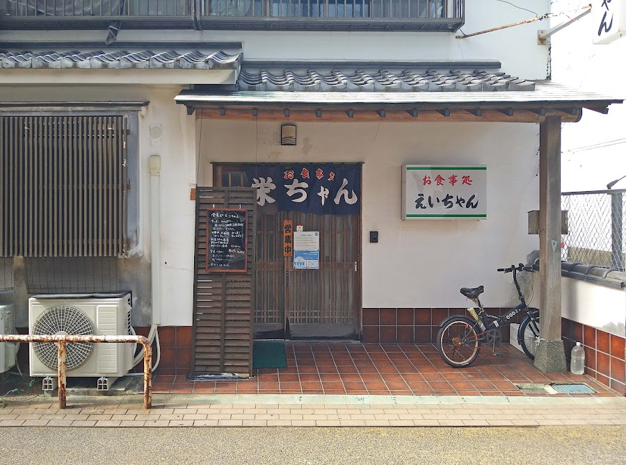
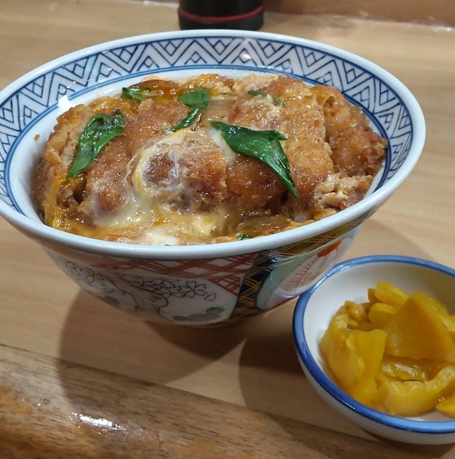
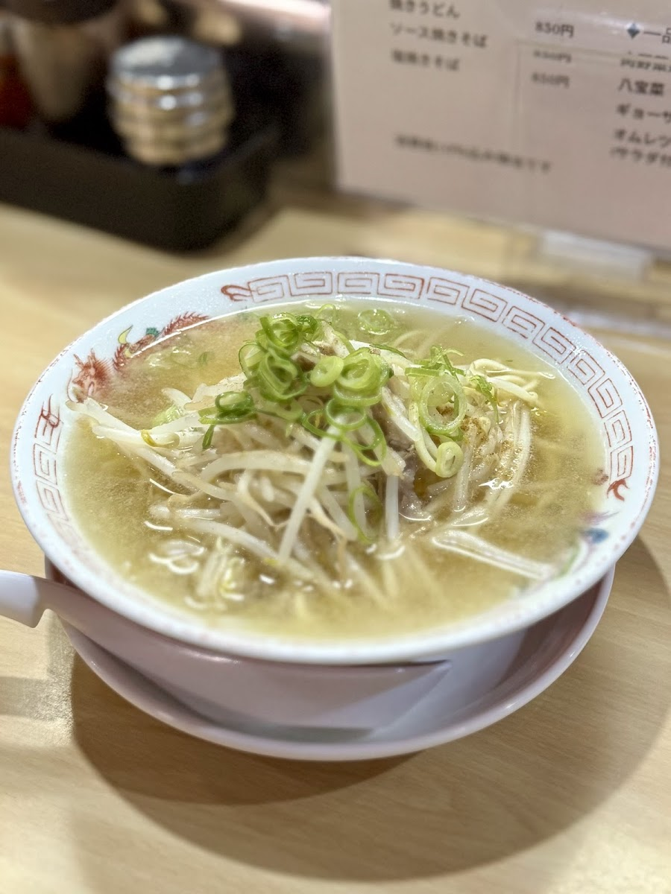

Our Commitment
毎日来ても飽きない味・空間・サービスを追求しています。
毎日丁寧に仕込む毎日変わる日替わり。素材の声を聞きながら、最高の状態でお出しします。
地元唐津に根ざして培ってきたボリューム満点。リピーターの方々に支えられています。
お一人でも、仲間と大勢でも。地元食材を使用で気軽に立ち寄れるお店です。
Gallery



※ 写真提供：Google マップ
Voice
「地元感たっぷりの「深夜食堂」伝説級にうまいカツ丼、締めの中華そば！最高です！ 唐津駅近くの「えいちゃん」、繁華街の中にあり地元感たっぷりのお店です。Googlemapの評価・コメントが非常に良かったので気になってました。 唐津旅行の〆2件目でこちらへ。 看板メニューはやっぱり「カツ丼」。 これがもう、しっかり…」
「出張滞在先ホテル近場だったので、晩御飯にて立ち寄りました。 こちらは唐津駅付近の飲み屋街の中にある御食事処☝️ 色々と近場には居酒屋・焼肉屋・焼鳥屋・ラーメン屋等色々なジャンルの店がある 店内はカウンター8席・座敷に6人テーブル×4 こちらはメニューも程好くあり、ガッツリ系とまでは行きませんが、御飯のボリュームは…」
「ちゃんぽんがめちゃ美味しかった。 それと、どうしても炒飯が食べたかったけど お腹的に無理なことを話したら 特別に半炒飯作ってくれたの嬉しい思い出」